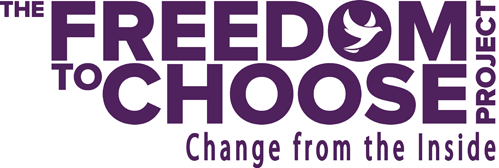
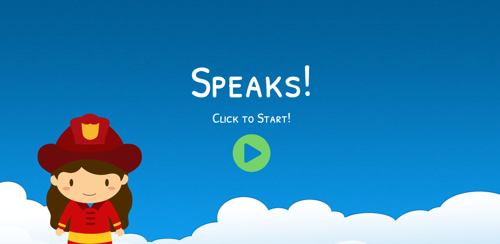

Shanaya Ukuwela.
User Experience Designer/Storyteller/Creative
About
Work
Johnson Precision ERP Selection
I am currently working on selecting a new Enterprise Resource Planning system (ERP) using UX design research methods that cater to the organization's business and user needs.

The Freedom to Choose Project Website Re-Design
I worked as a UX Intern under Lab Coat Media, who collaborated with the design company VeryNice to create a new design of non-profit Freedom to Choose's website.

Speaks
For a 10-week group school project, I worked as the UX Researcher in the creation of the web application, Speaks, an application designed to help children with learning disabilities improve their social and communication skills.
Contact
© Designed and Coded by Shanaya Ukuwela